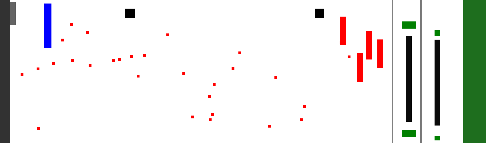
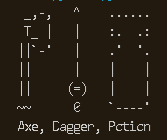

Programming Portfolio
Name: Coleman Alexander
Email: Bigbadtubadude@gmail.com
Phone: 864-633-9727
Major: Software and Web Development
Gary L. Burgess SC State Superintendent of Education Campaign Site
This was developed by Joel Vasquez and myself as the official campaing site for Gary L. Burgess. I also managed the hosting of the site on GoDaddy for the campaign. Burgess came in second in the SC Democratic primaries on June 14, 2022 with 54,464 votes (BallotPedia). The official site will be up for a few months, but after it is down, the site will still be visible on GitHub Pages.

_________________________
Cannon Run
The final project for Intermediate Web Development, this game involves heavy use of the Canvas aspect of JavaScript. The most intricate game I have made to date and coding it was a blast. I plan to update it occasionally to add new features even now that it has been turned in. For now, it only works on desktop but moving it to mobile will be a future project
Languages
- HTML
- CSS
- JavaScript(Canvas)

_________________________
Turn Based Fighting Game

I made this game in order to practice using SQLite.
Simply named "Axe, Dagger, Potion" after the three items the player can use each turn, this game involves taking turns with a computer enemy inflicting damage on each other or healing oneself.
Each choice involves different risk/reward from randomly generated numbers based on possible ranges of damage/healing.
This dynamic of carefully selected ranges was chosen after creating an iterative test python program.
This python program ran through the game thousands of times, changing the variables each time, and recording the win/loss rates of each set of statistics in an SQLite database.
This was meant to balance the choices among each other, making sure each choice was not too weak or too powerful compared to another.
_________________________
Calculator
A class project for Intermediate Web Development class, the assignment was to create a four function calculator and add as much functionality as possible. JavaScript is used extensively as it is the focus of the class. Compatibility with all browsers was not a requirement, please use the Chrome browser if the site looks different from picture.

_________________________
Saitama for President!
The final project for the Beginner Web Development class. The assignment was to make a campaign site for a fictional character. Compatibility accross browsers and mobile was not required (desktop version only).

_________________________
Turtle game
This simple but clever game is a rendition of hangman. Bet you can't win!.